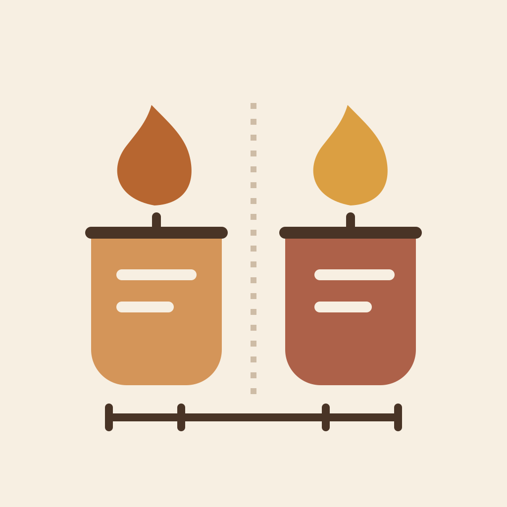

BurnPair
Same moment. Different samples. A clearer candle test.
Keep a whole burn experiment together: shared recipe, sample differences, observations and photos. Compare records by round and recorded elapsed time, with missing observations left visible.
Support & feedback
Email wzq12200609@gmail.com. Include your app version, iPhone model and what you expected to happen. Send only the information you want us to see; avoid sending private photos or a full backup unless needed.
Your first two experiments
BurnPair is free to download. You can create two complete experiment groups. BurnPair Pro is a one-time in-app purchase that unlocks more new experiment groups (up to 100 groups in total). It is not a subscription. The App Store shows the current price for your region.
Existing groups remain available. Viewing and editing your records, CSV/PDF exports, and backup/restore do not require Pro. To restore Pro, use Restore Purchases with the Apple Account used to buy it. Purchase cancellation does not unlock Pro; if a purchase is pending, wait for Apple’s result.
Keep your records
Your experiment records are stored on your device. BurnPair does not provide an account or cloud sync. Export a complete backup, including photos, to a location you control before changing devices or uninstalling. A CSV or PDF report is for reading or sharing and is not a complete restorable backup.
Comparing observations
Check the round, elapsed time and sample conditions before comparing results. A missing record means no observation was recorded at that point. BurnPair does not automatically rate candle safety, recommend a wick or decide whether a candle is ready for sale.
Record observations only when it is safe to do so. BurnPair is a recordkeeping tool and does not replace appropriate testing procedures or supervision.